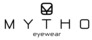
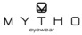

Productos & Servicios


Lentes de contacto
Adaptamos la mayoría de los modelos existentes en el mercado
- Permeables al gas
- Corneales
- Esclerales
- Terapéuticos
- Blandas personalizadas
- Blandas descartables
- Líquidos para mantenimiento
Lentes de receta
Ofrecemos desde lentes monofocales hasta los más avanzados
- Lentes mono focales básicos
- Lentes mono focales personalizados
- Lentes digitales
- Lentes progresivos básicos
- Lentes progresivos PREMIUM
- Lentes progresivos personalizados
- Lentes bifocales
- Lentes para ametropías elevadas
Lentes de sol
Contamos con una amplia colección de lentes de sol de marcas internacionales, somos representantes para Maldonado de la exclusiva marca de lentes de sol Revo. Nos especializamos en graduar tus lentes de sol con la receta de tus lentes de ver y de esa manera poder disfrutar de una buena vision con toda la proteccion que tus ojos necesitas
Lentes progresivas

Precision Pure
Optimizadas para los ojos Tecnología Digital Inside® Visión nítida con mejores resultados en el mundo digital.

Precision Plus
Optimizadas para los ojos y la montura Tecnologías Adaptation Control™ y FrameFit+® Óptica de precisión con cualquier montura.

Precision Superb
Optimizadas para los ojos, la montura y el rostro Tecnología FaceFit™ Adaptación fisiológica al rostro del usuario.

Individual 2
Optimizadas para los ojos, la montura, el rostro y las principales actividades diarias Tecnología IndividualFit™ y Luminance Design™ A la medida para satisfacer todos los requisitos individuales.
ZEISS Idividual Visión Sencilla
- Visión hasta 50% más amplia que las lentes convencionales.
- Totalmente personalizada para la prescripción de cada usuario.
- Optica superior que las lentes convencionales asféricas, debido al diseño adaptado para cada usuario.

ZEISS Sport
Lentes progresivas y visión sencilla ZEISS Sport producidas con las tecnología Precise Form by ZEISS que no solo compensa aberraciones desde el comienzo, si no que también incorpora el ángulo de inclinación como parámetros para cada usuario. El resultado es más comodidad, más precisión visual.
- Elimina el efecto prismático que provocan los armazones curvos.
- Compensación del valor cilindro para diseños individualizados: la posición de uso frente a los ojos (ángulo panorámico, ángulo pantoscópico, distancia al vértice).
- Aumento en la curvatura de la lente. Ángulos curvos resultan normalmente en aberraciones, astigmatismo o descentraje. La lente progresiva ZEISS Sport toma en cuenta desde el principio el ángulo panorámico para los cálculos de diseño personalizado.


 
